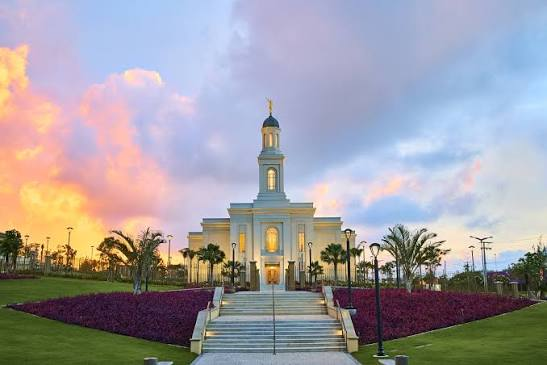
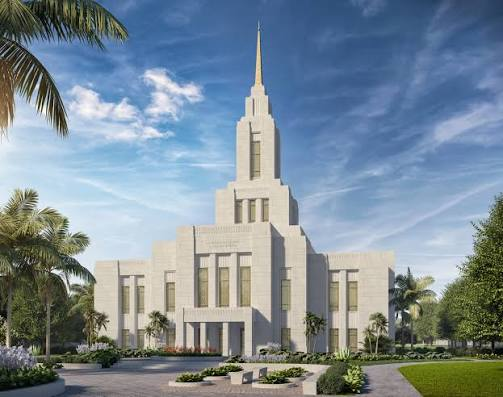
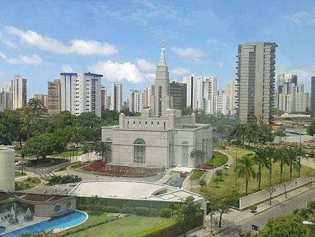
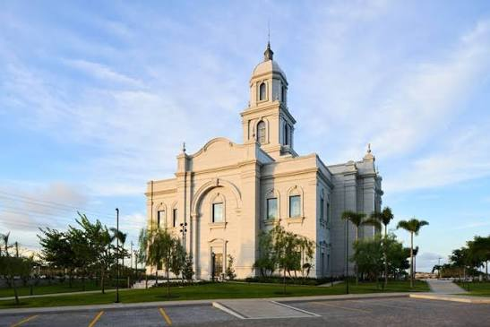
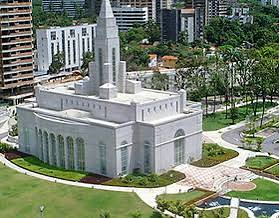

Album do Templo
Página Inicial
Antigo
Novo
Grande
Pequeno
Página Inicial

Templo de Fortaleza

Templo de Maceió
Templo de Manaus
Templo de Natal

Templo de Recife
Templo de Salt Lake

Templo de Salvador
Templo de São Paulo

Templo de Terezina